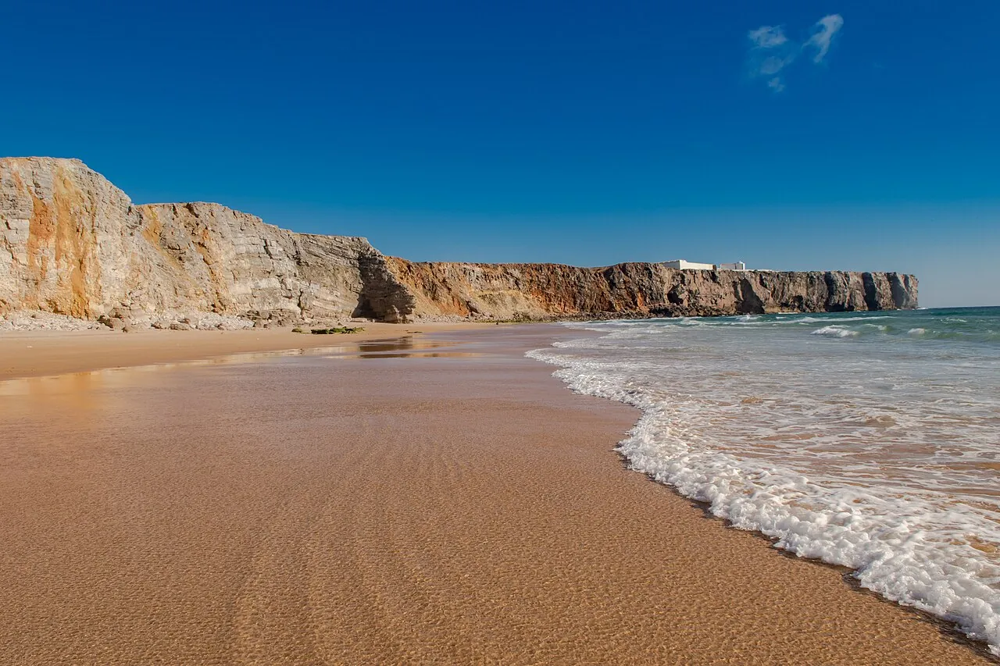

Praia do Tonel
Sagres, Portugal · surf, bodyboard

Plage au pied des falaises de Sagres, tout au bout de l’Europe. Exposée à l’ouest, elle reçoit de la houle quand la côte sud est à plat.
- Lieu
- Sagres, Portugal
- Niveau
- Intermédiaire
- Activités
- surf, bodyboard
- Type d'eau
- Mer / océan
- Coordonnées
- 37.01, -8.95 (position approximative du secteur)
Dangers à connaître
- Rochers aux extrémités de la plage.
- Vagues puissantes par houle d’ouest.
Le conseil d'Ocean Buddy
Si Tonel sature, la côte sud de Sagres s’abrite souvent du vent du nord.
Ouvrir dans Ocean Buddy Télécharger sur l'App Store
Source : Fiche Ocean Buddy · septembre 2026 · à vérifier localement.